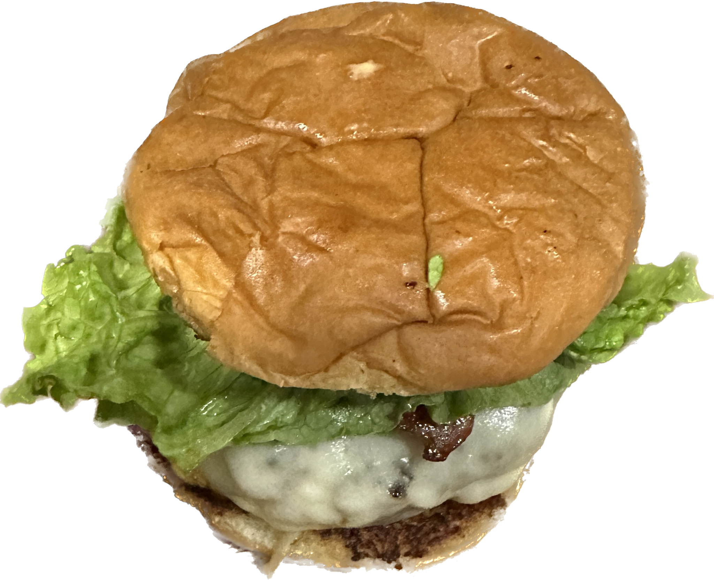

Wagyu Burger

Description
A genius creation by Chef Gam while he was living in an apartment studying computer science at the Florida State University.
A taste of this wagyu burger shall mesmerize your taste buds forever!
Ingredients
- Burger Buns
- American Farm Raised Wagyu Ground Beef
- Panko Bread Crumbs
- Minnced Onions
- Worcestershire Sauce
- Garlic Powder
- Egg
- Chicken Bouillon Powder
- Ground Cayenne Pepper
- Cheese of your likings - I like Provalone
- Salt and Pepper to taste
Sauce:
- Siriracha Sauce
- Thousand Island Salad Dressing
- Mayo
- Ketchup
Steps
- Get everything together and mix all of them together in a bowl with your hand or any utensils and rest them for awhile
- Mix the sauce ingredients together
- Once the meat is well rested, mold them into 4 equal burger patties
- Cook them or grill the burger patties by adding a slice of cheese right before finishing cooking
- Toast the buns with a little butter
- Put the sauce on the buns, stack the meat and put any veggies of your choice on top